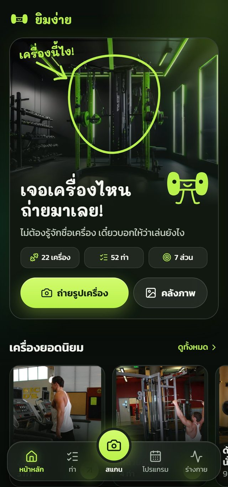
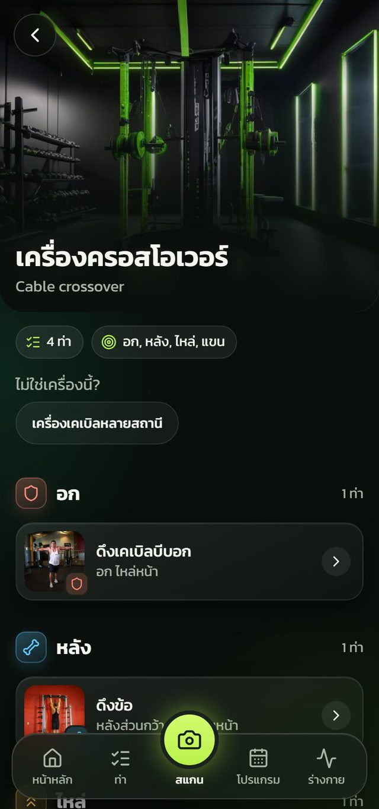
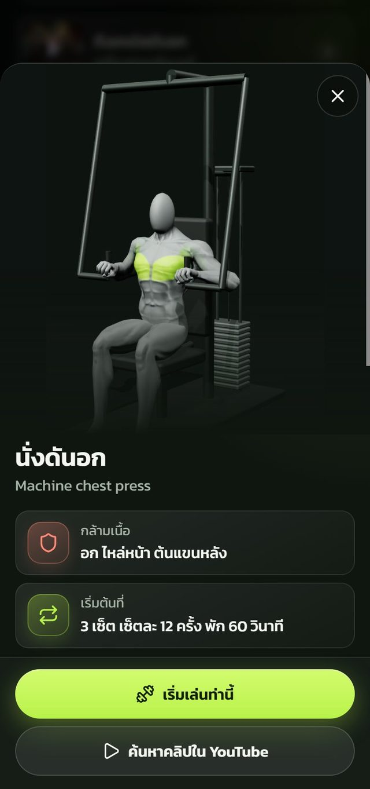
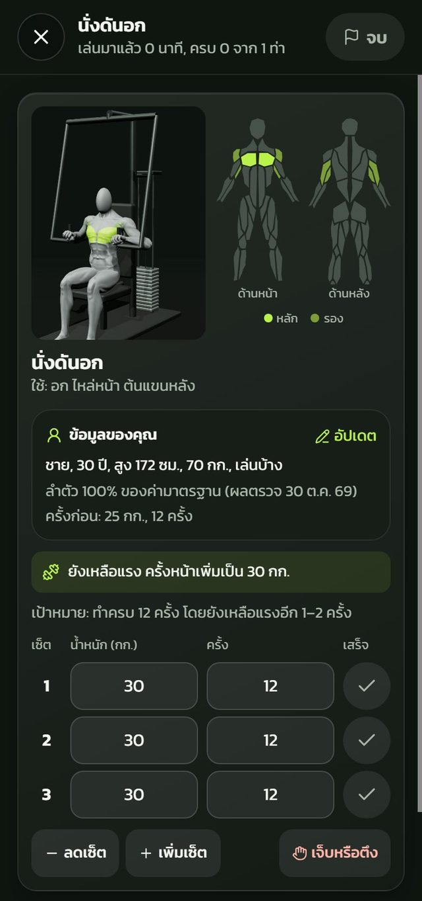
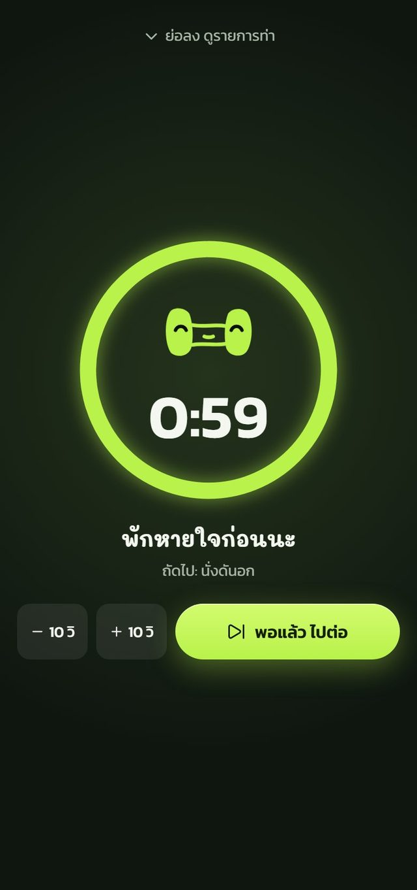
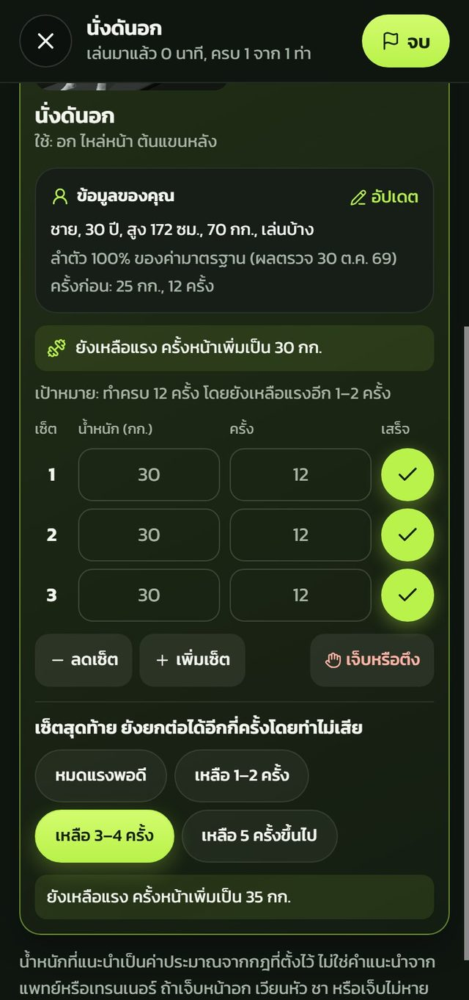
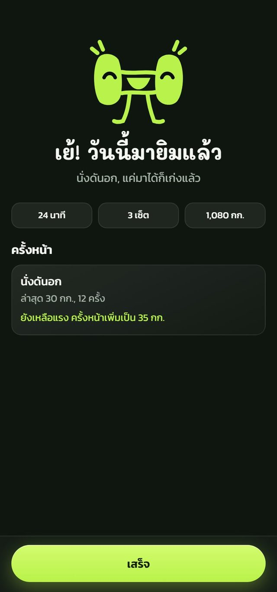
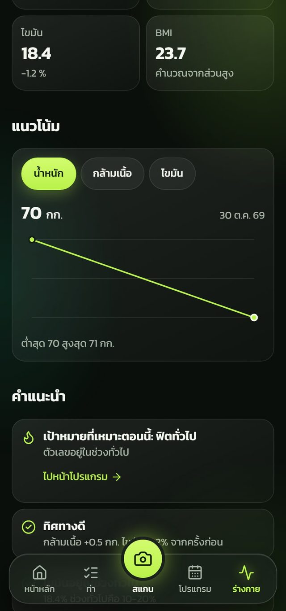
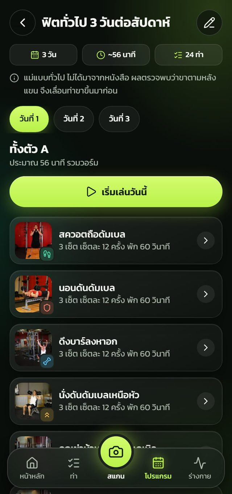

Yim Ngai · Design Concept Case Study
A Gym App That Starts With One Photo and Sets Up Your Next Visit
Photograph a machine and the app says what it is and how to use it. The design goal goes further than that first answer: every visit should leave something that makes the next one easier to start.
Screens are captured from the working app using sample data. The scan answers shown are simulated, so they say nothing about real AI accuracy.

01 — Overview
Two problems: getting started and keeping going
Yim Ngai, Thai for "easy gym", began as an app for personal use. Knowing a machine's name is a small barrier, but it is only the first one. Someone who gets past it still has to know what weight to use, what to do when something hurts, and whether any of this is working. So the concept has two halves: remove the need for prior knowledge, then turn each visit into the starting point of the next.
02 — Concept Map
Six questions the app has to answer
Getting started
What is this machine?
Take a photo instead of searching for a name you do not know.
How do I use it?
Moves grouped by muscle, with a demo and starting sets.
What should I do today?
A program built around your goal.
Keeping going
What weight this time?
Your last result and a suggested next step.
What if it hurts?
A button in every move that offers alternatives.
Is it working?
Body readings over time, which feed back into the program.
03 — The Continuity Loop
Scanning is how you arrive, not why you return
From the first photo to a repeating habit
04 — Where a Visit Could Stop
Every stage has a way to keep going
What could stop them
Design answer
The stop points are design assumptions from building the app for personal use. They have not been tested with other users.
05 — Getting Started
“You don't need to know the name”
The picture shows the idea
A hand-drawn circle on a real machine shows what to point the camera at.
The promise comes first
The first lines say no machine name is needed.
One main action
Lime marks the camera button, with the photo library as a quieter option.
Scan from any tab
The scan button sits in the middle of a floating menu.


From a photo to the first set
- The answer gives a plain Thai name, and asks "Not this machine?" right below it.
- Moves are grouped by muscle, each with its own colored icon.
- The move sheet shows the worked muscle on the figure and offers sets to start with.
06 — During the Workout
The screen remembers, so you do not have to

Last time is on screen
"Last time: 25 kg, 12 reps" appears beside your own details.
Advice in plain words
Reps left in reserve last time become "go up to 30 kg".
Sets are already filled in
Press the check when a set is done, and only type if it differs.
A way out, not a dead end
The pain or tightness button offers alternatives instead of ending the workout.

Rest with a next step
The clock names the next move, and you can change the time or move on.

One question for the future
How many more reps could you do? The answer sets the next weight.

An ending that points forward
It celebrates showing up, then says where to start next time.
07 — Over Time
Body readings change what the app suggests


From a reading to a changed program
- Each new reading is compared with the last one, and the app says which way things are heading.
- The app recommends a goal that fits the numbers, with a link to the program.
- If legs lag behind arms, leg moves come earlier, and the program says why.
08 — Decisions & Trade-offs
What each choice gave, and what it cost
1. Treat a failed scan as a detour
Every scan error leads to picking from a list, and an unsure answer offers other likely machines.
Upside
The AI being wrong never stops the workout.
Cost
The app only knows machines in its own catalog, which then has to be maintained.
2. Base weight advice on simple rules
Reps in reserve, missed reps, and sharp pain each change the next weight in a fixed way. The app says the advice is an estimate, not from a doctor or trainer.
Upside
The same answers always give the same advice, and it can be explained in one line.
Cost
Rules cannot see form or fatigue, so they are less personal than a real coach.
3. No progress graphics without real data
Progress rings would have made the first screen look livelier, but there would be no real numbers behind them. Charts appear once real readings exist.
Upside
Every number on screen can be trusted, which matters when it decides a weight.
Cost
New users see less on the first day, so the early screens feel less rewarding.
4. Praise showing up, not only performance
A dumbbell mascot and a friendly voice replace the usual fitness-app intensity: "Just showing up is already great."
Upside
A small session still ends on a good note, so it does not feel like a failure.
Cost
The playful tone may feel too light for experienced lifters.
5. Start without accounts
Workouts and readings are saved in the browser, with no database. Closing the tab mid-workout is safe, because the session comes back on reopening.
Upside
No sign-up stands between the first photo and the first set.
Cost
Changing phones or clearing the browser loses the history that continuity depends on. Accounts are planned for the next phase.
6. Make people check report values
The AI can read a photo of a body report, but values must be confirmed before saving. The screen also says images go to a free AI service, and offers typing by hand instead.
Upside
A misread number does not quietly change the program, and people choose what they share.
Cost
An extra step, at exactly the moment the photo was meant to save effort.
09 — Design System
Lime means “do this next”
เจอเครื่องไหน ถ่ายมาเลย!
3 เซ็ต เซ็ตละ 12 ครั้ง พัก 60 วินาที
Lime is kept for main buttons and selected states, with a separate colored icon for each muscle and zone. Mali sets the name and big headings, and Kanit sets numbers and content.
Credits: 3D figure from Quaternius (CC0), body map from react-body-highlighter (MIT), exercise photos from the open free-exercise-db dataset.
10 — Where It Stands
What is built, and what still is not proven
01
22 machines, 52 moves, 7 muscle groups
The whole loop works in the app. So far, only the chest press has a 3D clip, and 9 machines are not yet confirmed.
02
Scan accuracy not measured yet
The aim is 8 correct out of 10 images on a real phone. Reading report photos has only been tested with mock answers.
03
No retention numbers yet
Continuity is the design intent, not a measured result. Proving it means watching whether people come back over several weeks.
Interested in working together?
Open to UX/UI design work on products people return to. Feel free to reach out.